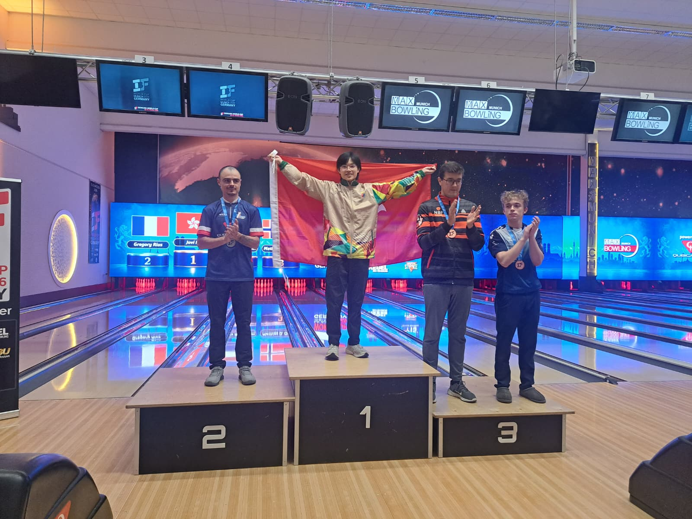

bowling2026-10-20 01:10 · 中國香港保齡球總會
18歲馬嘉言勇奪IBF保齡球世界盃金牌 港將事隔11年再封王
Hong Kong's 18-year-old Jovi Ma Wins IBF Bowling World Cup Men's Singles Gold in Munich
18岁马嘉言勇夺IBF保龄球世界杯金牌 港将事隔11年再封王
18歲港將馬嘉言在德國慕尼黑舉行的2026 IBF保齡球世界盃男子個人賽決賽，以局數2:0擊敗法國球手Gregory Rius，勇奪金牌。繼胡兆康2015年在美國拉斯維加斯封王后，事隔11年再有香港球手在世界盃男子個人賽奪冠，馬嘉言成為史上第二位世界盃封王的香港球手。
今屆賽事於10月13日至21日在慕尼黑舉行，男子個人賽採用三局兩勝制。馬嘉言以A組首名出線32強，準決賽面對荷蘭球手Mathijs Beverdam，先以211:202拿下首局，再以218:213取勝晉級。決賽面對法國的Gregory Rius，馬嘉言緊咬比分、越戰越勇，先以202:201險勝首局，第二局再以203:198奠定勝局，為香港奪得這面意義非凡的金牌。另一港將麥紹岐則止步八強。